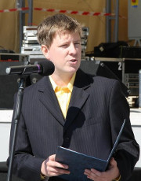
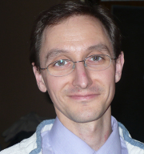
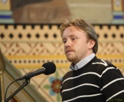

Program
Hlavné témy
Martin Tobák
 Kazateľ zboru Bratskej jednoty Baptistov v Nesvadoch, 30 rokov, ženatý. V BJB Nesvady pôsobím ako kazateľ od 2009, predtým štúdium na Katedre evanjelikálnej teológie a misie. Pôvodom z Košíc.Každý z nás je zapojení do duchovnej vojny kozmických rozmerov bez toho, či si to uvedomujeme, alebo nie. Táto vojna prebieha v našich srdciach a v srdciach ľudí na celom svete. Je to vojna, ktorá má mnoho obetí, mnoho padlých, mnoho zranených. Jej znaky a dôsledky môžeme vidieť rozosiate po celej našej planéte. Ako väčšina vojen aj táto je vojnou o moc. O moc nad touto zemou, o moc nad tvojim životom a nad tvojou večnosťou. Uvedomuješ si jej existenciu? Vieš, že ako nasledovník Ježiša Krista si v prvej bojovej línii? Chápeš, že je to vojna, v ktorej ide o tvoje srdce, tvoj život, o tvoju večnosť? Príď na piatkovú večernú tému a dozvieš sa viac o tejto vojne, o aktéroch tohto vojnového konfliktu a o objekte, o ktorý sa v tejto vojne bojuje.
Michal Kevický
 Michal Kevický pôsobí 14 rokov ako kazateľ zboru Viera BJB v Bratislave. Má 39 rokov, manželku Evku a deti Dorotku (12 r.), Ľubku (8 r.) a Samka (6r.). Boh mu položil na srdce víziu modlitebného hnutia na Slovensku a túžbu po prebudení. Verí, že Boh pripravuje svoju cirkev na Slovensku na Jeho mocné pôsobenie. S tým súvisí naša obnova, ktorá je možná iba v Duchu Svätom a v osobnom vzťahu s Bohom. Viac o Michalovi, jeho rodinke a službe nájdete na ich blogu proroctvo.blogspot.skŽivot a smrť sú nebezpečne blízko seba. Stačí jeden krok... Možno si už prešiel kilometre a si len jeden milimeter ďaleko od života. Všetko vieš, si tam, hľadíš na to, dotýkaš sa toho, snažíš sa, počúvaš... A predsa nežiješ. O tento jeden milimeter sa totiž zvádza obrovský boj. Väčší ako o tie kilometre, čo máš za sebou. Jeden krok. Urobiť ho je masaker. Ak sa pre ten krok rozhodneš, bude to fest ťažké. Ale ten život potom stojí za to. Sobota večer. Riskneš to a prídeš?
Miloš Masarik
 "Som kazateľ Bratskej jednoty baptistov v Ružomberku. Mám výbornú manželku a dve krásne dcéry. Ľahko sa naštvem, mám rád humor a dobre hrám kalčeto. Ježiš ma často prekvapí tým ako v našom okolí koná. Mám ho rád a teším sa keď môžem pracovať pre Neho.""Vytiahnuť z vody fľašu z odkazom je aj dobrodružstvo, aj zodpovednosť. Čo ak je tam S.O.S. a súradnice? Boh dnes denne odpovedá na mnoho takýchto odkazov, ktoré mu rôznym spôsobom doručujeme a my sme súčasťou Jeho záchrannej akcie."
Maruška Skoncová
 Maruška Skoncová je riaditeľkou KPM (Konferencie pre pracovníkov s mládežou) v Tréningovom centre Kompas. Píše knihy, srdce jej bije pre učeníctvo, miluje svojich priateľov a vodu.
Maruška Skoncová je riaditeľkou KPM (Konferencie pre pracovníkov s mládežou) v Tréningovom centre Kompas. Píše knihy, srdce jej bije pre učeníctvo, miluje svojich priateľov a vodu.Budeme sa spolu pozerať na Božieho Syna a na Jeho víťazstvo na kríži. No tam Jeho práca neskončila, naše životy sú rámcované Jeho víťazstvami a my v týchto víťazstvách môžeme prakticky žiť. Uprieme svoje oči na Ježiša a budeme hovoriť o slobode.
Semináre
Presvedčivá technológia: Čiňte mi učeníkmi všetky národy [Peter Makovíni]
 Volám sa Peter Makovíni a verím, že Ježis Kristus je Boží syn, ktorý žil, zomrel a telesne vstal z mŕtvych. Toto je ústredná pravda a hlavný dôvod nádeje, ktorá je vo mne. Pochádzam z Bratislavy, ale už vyše 5 rokov žijem v Dánsku kde som vyštudoval bakalára teológie a pokračujem v magisterskom štúdiu na odbore informačnej architektúry a presvedčivého dizajnu. Väčšinu môjho života som bol zapojený v službe a Pán mi aj teraz dal možnosť pracovať v baptistickom zbore v Odense ako mládežnícky kazateľ. Mám záľubu v športe a hudbe, ale aj vášeň pre apologetiku a filozofiu, ktoré považujem za cenné a užitočné nástroje pri zapájaní sa do (post)modernej scény.
Volám sa Peter Makovíni a verím, že Ježis Kristus je Boží syn, ktorý žil, zomrel a telesne vstal z mŕtvych. Toto je ústredná pravda a hlavný dôvod nádeje, ktorá je vo mne. Pochádzam z Bratislavy, ale už vyše 5 rokov žijem v Dánsku kde som vyštudoval bakalára teológie a pokračujem v magisterskom štúdiu na odbore informačnej architektúry a presvedčivého dizajnu. Väčšinu môjho života som bol zapojený v službe a Pán mi aj teraz dal možnosť pracovať v baptistickom zbore v Odense ako mládežnícky kazateľ. Mám záľubu v športe a hudbe, ale aj vášeň pre apologetiku a filozofiu, ktoré považujem za cenné a užitočné nástroje pri zapájaní sa do (post)modernej scény.Ako človek mení svoje postoje, či správanie? Zatiaľ čo psychológia ponúka mnohé odpovede na túto otázku, moderná technológia je ideálnym prostriedkom precízne vykalkulovaného vplyvu. „Hop, to znie ako manipulácia!“, možno. Na tomto seminári sa dozvieš ako môže cirkev využiť presvedčivý dizajn pre prácu s dobrovoľníkmi, získavanie kresťanov a šírenie evanjelia (nie len na webstránkach). Zaznie aj čo-to o etickosti tejto disciplíny, tajomstve vnútornej motivácie, ale aj o 3 prísadách, ktorých správna kombinácia začne, zastaví alebo pozmení akékoľvek správanie.
Life in God [Mark Hill]
 Mark Hill je učiteľ Biblie a hudobník, ktorý pracuje na Dánskej Letničnej Biblickej Škole v meste Mariager, kde vyučuje viacero biblických predmetov a tiež riadi školu Uctievania a Hudby. Je autorom kníh a tiež vydal viaceré CD-čka. Má 40 rokov, jeho manželka sa volá Melody, a majú spolu 3 deti. Má Bc. z Biblie a Teológie, a v súčasnosti pracuje na magisterskom titule.
Mark Hill je učiteľ Biblie a hudobník, ktorý pracuje na Dánskej Letničnej Biblickej Škole v meste Mariager, kde vyučuje viacero biblických predmetov a tiež riadi školu Uctievania a Hudby. Je autorom kníh a tiež vydal viaceré CD-čka. Má 40 rokov, jeho manželka sa volá Melody, a majú spolu 3 deti. Má Bc. z Biblie a Teológie, a v súčasnosti pracuje na magisterskom titule.Pomocou ilustrácií zo sveta superhrdinov ako Batman a Spiderman a filmov ako Terminátor vyvodzuje Mark paralely s kresťanským chodením s Bohom, a to humorným a čerstvým spôsobom, ktorý dobre utkvie v pamäti. Viaceré rôzne aspekty našich životov s Bohom sú prezentované s pevným základom v Písme.
Keď na bojovníka doľahne kríza [Pavol Mrština]
 Niečo o mne: pomocou Pána Ježiša Krista sa snažím bojovať o životy - svoj, manželkin i našich 5 detí. Zo zostávajúcich síl pomáham mládeži a zboru v Poprade. Robím to už dlhšie a niekedy aj víťazne.
Niečo o mne: pomocou Pána Ježiša Krista sa snažím bojovať o životy - svoj, manželkin i našich 5 detí. Zo zostávajúcich síl pomáham mládeži a zboru v Poprade. Robím to už dlhšie a niekedy aj víťazne.Niekedy sa aj najlepší bojovník ocitne v osobnej kríze - zovretý pocitom osamelosti, strachu, úzkosti. Na základe Žalmu 25 budeme spoločne hľadať východiská v Bohu a povzbudíme sa k vytrvalosti v boji až do konca.
Identita Ježiša ako argument pre kresťanstvo [Richard Nagypál]
 O autorovi: Študujúci teológ. Tvorca diskusii a priestoru pre dialóg. Zakladateľ projektu Animans. Kresťan so snahou porozumieť Bohu vo svete a svetu vo svetle Boha.
O autorovi: Študujúci teológ. Tvorca diskusii a priestoru pre dialóg. Zakladateľ projektu Animans. Kresťan so snahou porozumieť Bohu vo svete a svetu vo svetle Boha.Najkontroverznejšia, najzáhadnejšia, najnepochopiteľnejšia a najbizarnejšia postava v histórii ľudstva. Zmenil každého koho stretol. Zmenil celú históriu, ktorú rozdelil ako kokos a vložil večnosť medzi pred a po našom letopočte. Ak niekto tvrdí, že Ho stretol bez toho aby sa zmenil, nestretol Ho vôbec. Stretnúť ho je ako by Rómeo nestretol Merkúcia alebo Júliu, ale Shakespeara, ako by sa Frodo nestretol s Gandalfom alebo Aragornom, ale Tolkienom.8.1. 2015 som vložil meno „Ježiš“ do Amazon.com a behom sekundy som dostal odkazy na 757, 931 kníh. Vložil som ho do Google a za 0,48 sekundy mi vyhľadalo 3,5 miliardy odkazov. „Kto hovoríte, že som?“ spýtal sa raz tento človek svojich nasledovníkov. Ozvenu tejto otázky a pokus o jej odpoveď, bude počuť na tomto seminári. Cieľom nie je vychrliť biblické verše, ktoré dávajú jasnú odpoveď. Na tomto seminári budeme premýšľať o tejto otázke z pohľadu symbolickej logiky. Je to jeden z najstarších argumentov pre kresťanskú vieru, o ktorom sa v poslednej dobe na veľké prekvapenie hovorí stále viac.
On-Ona, chodenie a hranice v ňom [Zoli Kakaš]
 Niečo o mne: Syn, manžel, otec, kazateľ, ktorý Bohu vďačí za to, že sa stáva lepším vo všetkých týchto vzácnych úlohách.
Niečo o mne: Syn, manžel, otec, kazateľ, ktorý Bohu vďačí za to, že sa stáva lepším vo všetkých týchto vzácnych úlohách.Pre niektorých sú hranice ako prekážky, pre iných sú to hradby, ako zabrániť dôvernosti a intimite, pre niekoho sú prejavom sebectva.Toto však hranice nie sú a obzvlášť nie v chodení. Pochopiť čo hranice sú a stanoviť ich, sa môže stať pre Vás užitočným nástrojom pre upevnenie lásky, zodpovednosti a slobody a pomôcť tomu, aby Vaše chodenie prinášalo Bohu slávu.
Boh a jedinečný ty (Nie si kopia) [Eva Kevická]
 Eva Kevická, BJB III Viera, Bratislava. Vedie Tanečno-dramatickú skupinu Potichu a (ne)umelci. Spolu s manželom Michalom majú tri deti.
Eva Kevická, BJB III Viera, Bratislava. Vedie Tanečno-dramatickú skupinu Potichu a (ne)umelci. Spolu s manželom Michalom majú tri deti.Seminár o Božej zvrchovanosti a našej jedinečnosti zahŕňajúci oblasť chvály, osobnej komunikácie s Bohom a nášho obdarovania.
Stačí ak chceš [(ne)umelci]
(ne)umelci, BJB III. Viera, Bratislava. Našou túžbou je, aby umenie bolo sväté, čisté a kvalitné, čo sa prevedenia týka, zároveň. Túžime prinášať rozmanitosť Božej tvorivosti v rámci cirkvi a aj k tým, ktorí Boha nepoznajú.Praktický workshop o umení a s umením, na ktorom môžeš objaviť svoj talent, poradiť sa, alebo zistiť, kde sa dá získať najlepšia inšpirácia (budeme sa venovať výtvarnej, literárnej a dramatickej oblasti)
Odpustím, ale nezabudnem. [Maruška Skoncová]
Maruška Skoncová je riaditeľkou KPM (Konferencie pre pracovníkov s mládežou) v Tréningovom centre Kompas. Píše knihy, srdce jej bije pre učeníctvo, miluje svojich priateľov a vodu.O odpustení sme už počuli tak veľa tém a kázni. Teraz by sme sa však mohli pozrieť na jeho opak - na neodpustenie. Tento seminár bude v rámci možnosti pokusom byť naozaj praktickým. Ak je toto oblasť, v ktorej zápasíš a nevyhrávaš, tento seminár by mohol byť práve pre teba.